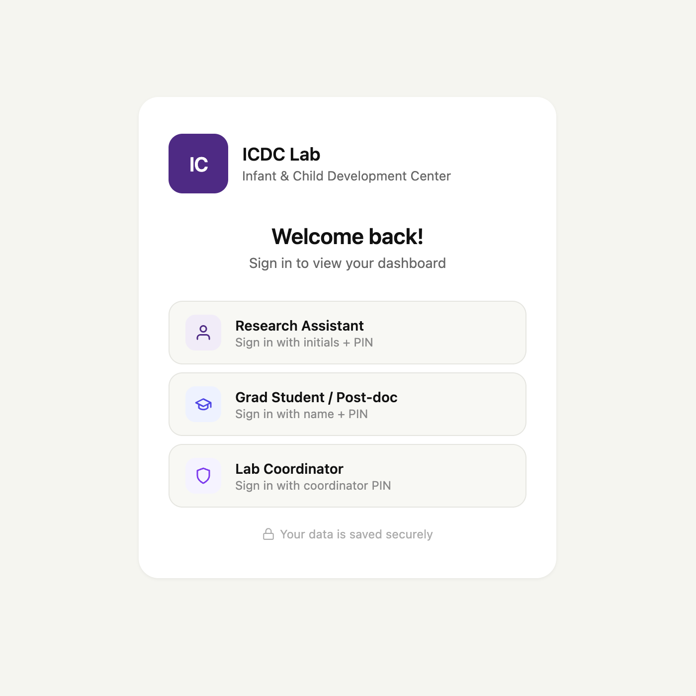
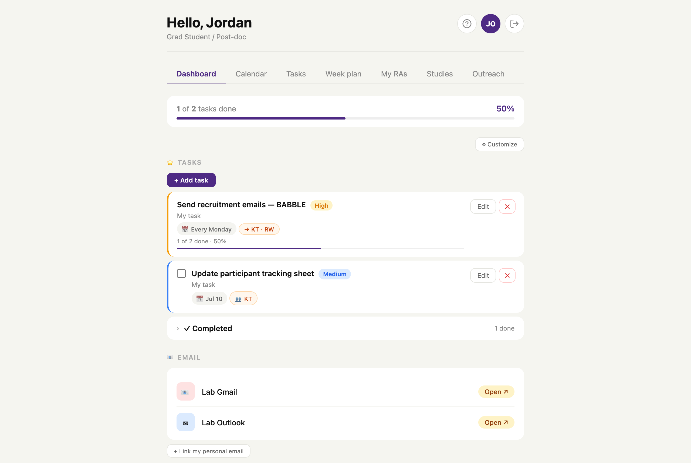
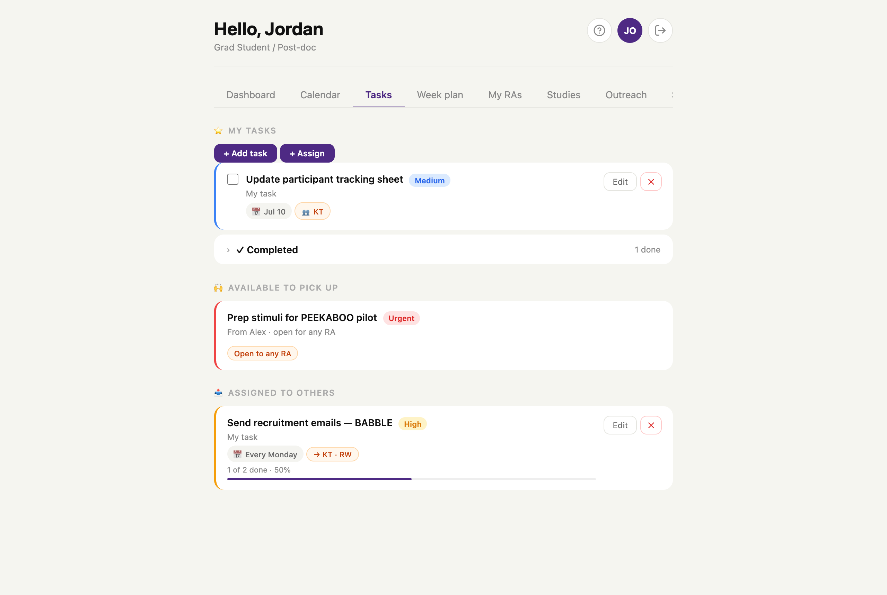
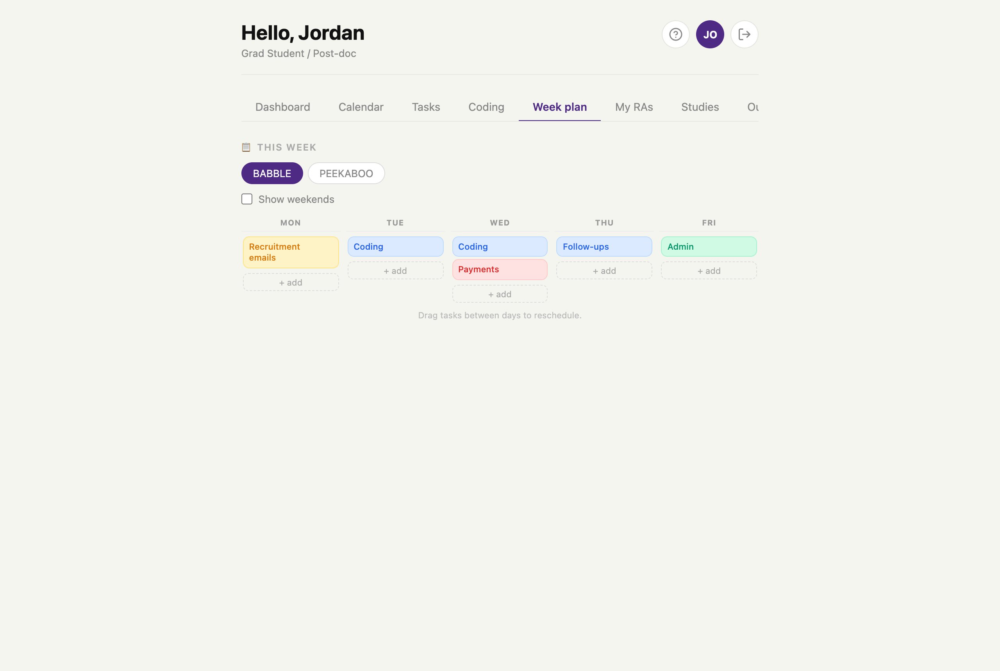
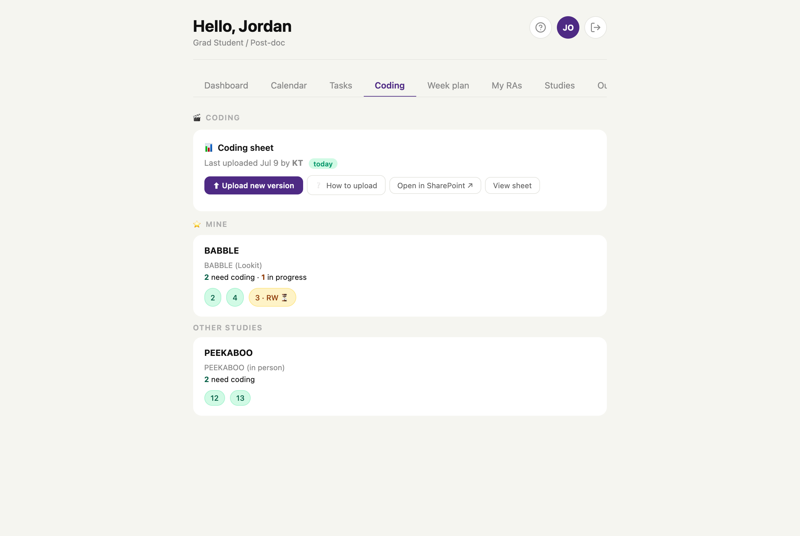
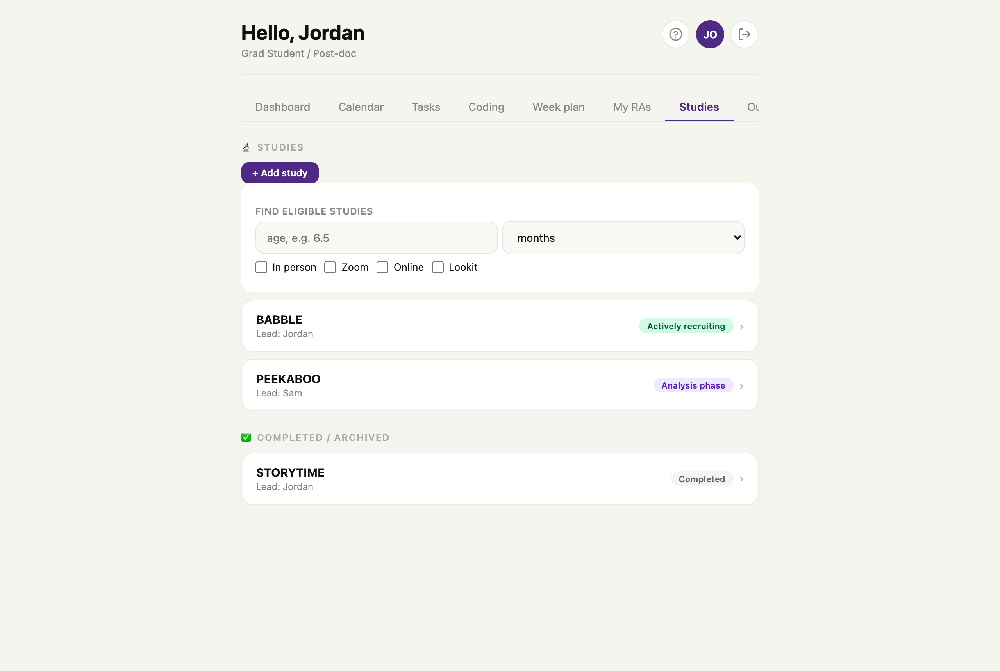
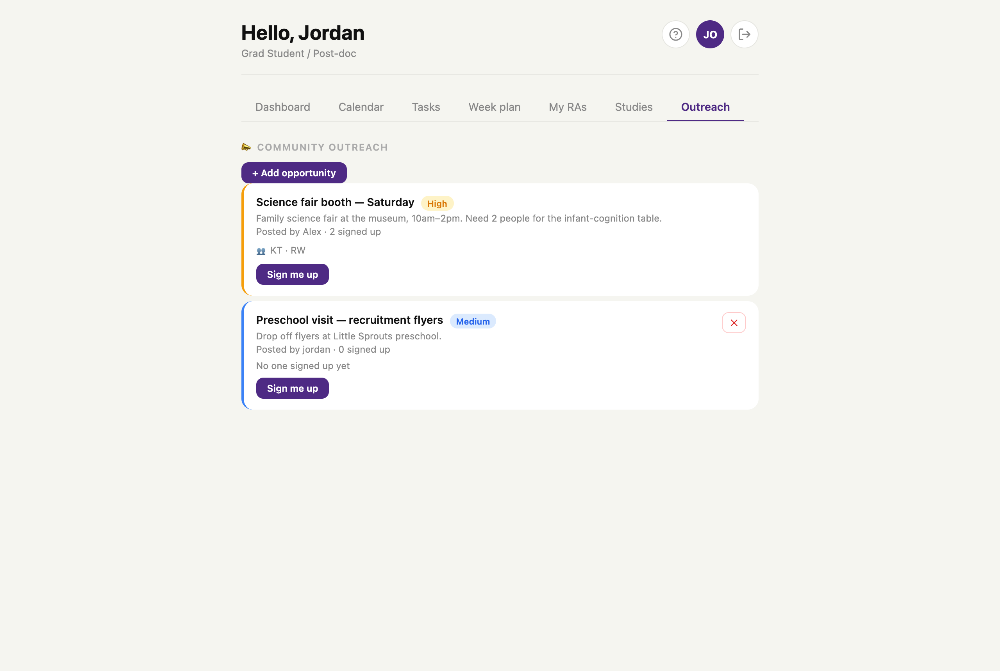
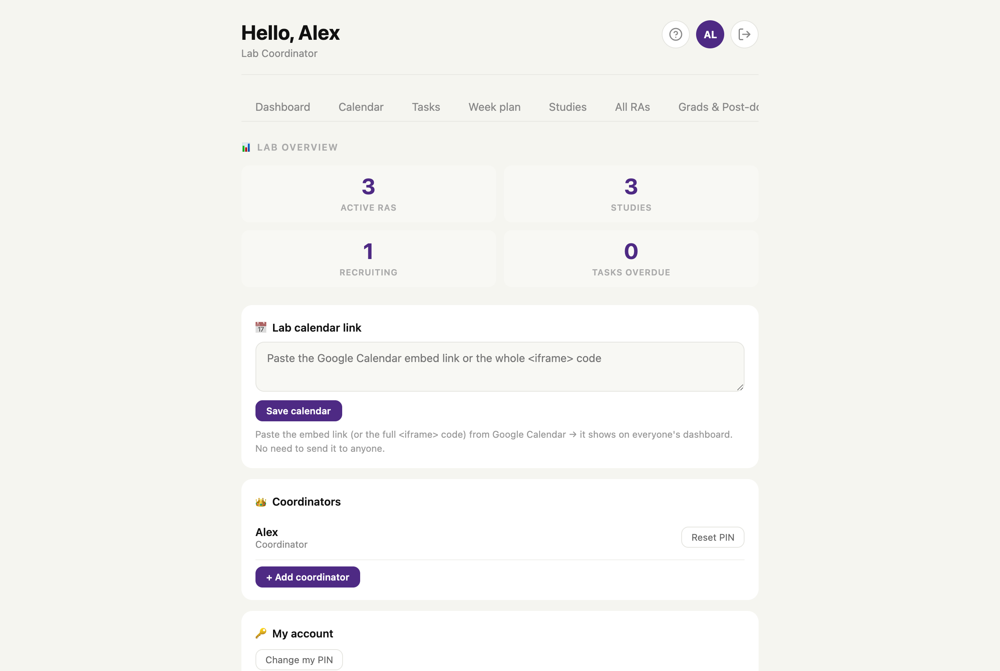

A self-taught web app I designed and built to give my research team one shared place to know what to do, who's doing it, and how every study is progressing, now a core part of how the lab operates day to day.
Our lab had no centralized place to assign and track work. Tasks lived in people's heads, in scattered messages, and across separate documents, so no one was quite sure who owned what, or what to do next. I saw the friction this caused every day, so, with no formal coding background, I used AI tools to help me design and build one shared source of truth, learning as I went.
A lab isn't one kind of user, so I built role-based sign-in: RAs, grad students, and coordinators each land in a view tailored to them, opening on their progress and priorities so no one has to wonder where to start.


Tasks can be assigned to a person or dropped into an "open to any RA" pool, each with a priority, due date, and progress. A drag-and-drop weekly planner then turns that list into a realistic plan.


Behavioral studies generate hours of video that has to be "coded", annotated frame by frame. I built a coding tracker that shows what needs coding for each study and who's working on it, with a link straight to the shared coding sheet, so nothing slips through the cracks.

Every study lives in one place with its lead and phase, plus an eligibility finder that surfaces which studies a participant qualifies for by age. And an outreach board lets anyone post an event that teammates claim with one "Sign me up" click, no more reply-all threads.


Coordinators get an admin view: lab-wide stats at a glance, team management with PIN resets, and a shared calendar that appears on everyone's dashboard.

A small idea, "we need one place for this," turned into a tool the whole team now relies on.
I started with no formal coding background: just a problem I was determined to solve and the willingness to figure it out. By directing AI tools toward a clear vision, I taught myself what I needed and built something genuinely new for my lab: a tool that didn't exist before, that the whole team now relies on every day. I'm really proud of it, most of all because it made a real difference for the people I work with. It showed me how far initiative can go: that spotting a problem and having the drive to build the solution can create something that matters. That's exactly the energy I want to bring into marketing.